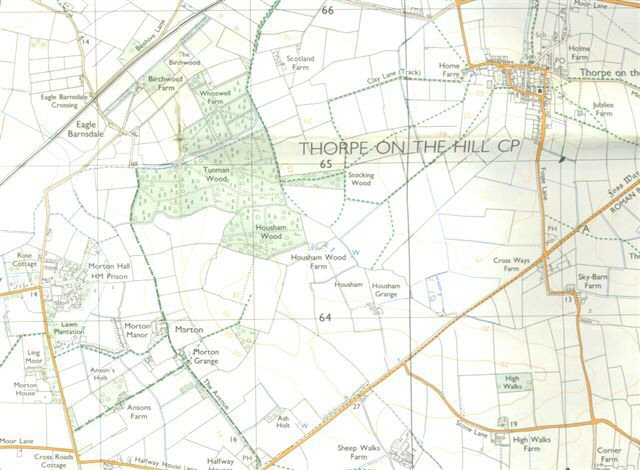
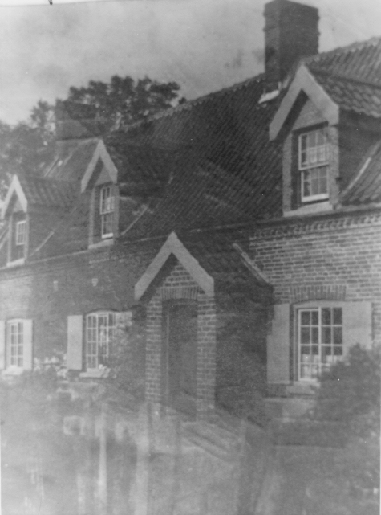
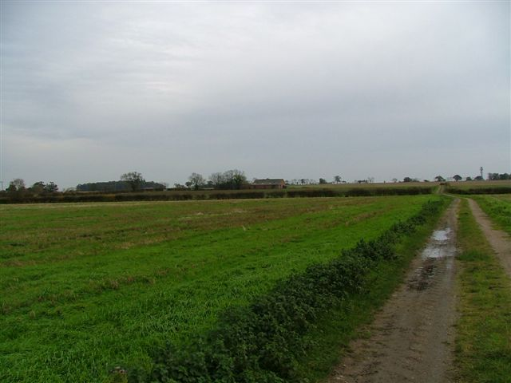
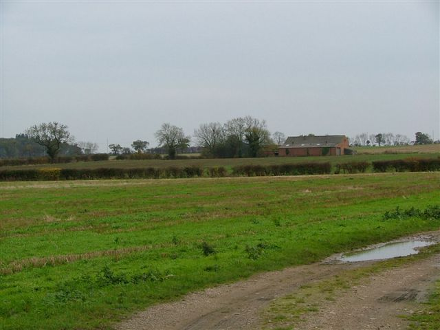
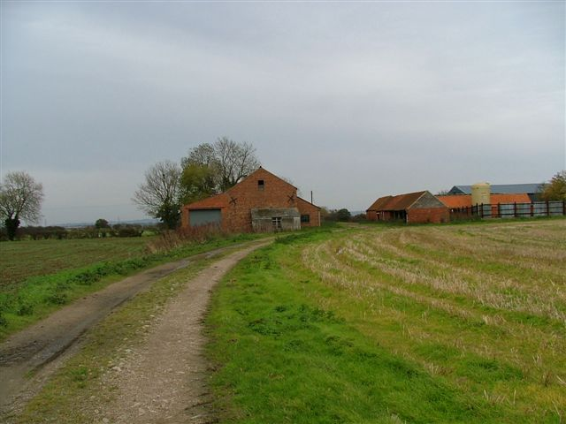
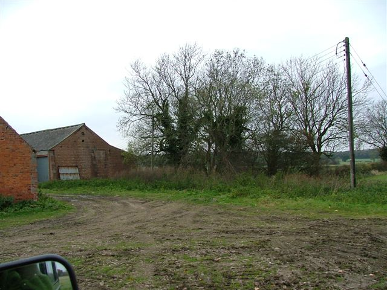

Housham - Housham Grange
Housham Grange was the home of our <a href="drury.html">Drury</a> ancestors for most of the 19th Century. The hamlet of Housham is located near the village of Thorpe on the Hill, just south of Lincoln.
Extract from 'The Hamlet of Howsham' Chapter 21 of 'Haddington Gleanings' 1994.
Lying to the west of the modern A46, or Newark Road, the hamlet of Housham (pronounced 'How-sum') almost certainly originated in medieval clearance of the thick stands of woodland hereabouts. Indeed 'Kesteven', the ancient district name for this area, itself seems to contain the Celtic word 'ceto' meaning 'wood' and thus gives us testimony to the extensive wild wood which once covered the region. Nor is it any surprise to find significant stands of woodland still in existence. Housham Wood itself is still an impressive size and is closely adjoined by Tunman Wood of Morton and Stocking Wood of Thorpe. (The hamlet of Housham consists of two farmsteads, <a href="../wood/housham.html">Housham Wood Farm</a> and Housham Grange, the latter became home of the Drury family for a large part of the 19th Century).

The building of the first farmstead at Housham remains a mystery. However in the South Hykeham Glebe Terriers for 1603, John Reade, a yeoman of Haddington, sold his freehold dwelling called 'Fosse House' (Lincs Archives Committee, Archivists Report 20, Page 67) to George Nevile.
There seems for a time to have been a second Read farmstead at Housham, probably adjacent to the first. This was occupied by another sept of the Reads and we glean a good look at it from the Inventory of Gervase Read who died in 1661. His will makes clear his family was resident in "that End of ye house I now live in" (LAO LCC Wills 1661/ii/864), probably because his mother Christian Read was still living and in occupation of the other half, subsequent to her widowhood. In any case by Haddington standards the dwelling was a large one with a 'house', parlour, dairy, buttery, chamber over parlour and another "upper chamber" (LAO Probate Inventory 159B/64) which was presumably for bedding and linings, a degree of comfort was evident far superior to most Haddington households, although sacks of malt and rye were also stored there. The trundle beds are also interesting as this was either for the servant Thomas Gordley or the maid Margaret Pacey, both of whom received legacies (this is the house that we now know as The Grange).

Housham Grange
Subsequent to the death of widow Elizabeth Read in 1704, it is highly likely that the Read freehold was then purchased by the Nevile estate, Elizabeth's daughter being a minor (The Nevile family still own the farm and surrounding land). Richard Thorpe, who had married Anne Walker at South Hykeham the previous year, may then have taken the tenancy, succeeded in 1709 by his son John. From 1755 onwards it was certainly in the hands of Robert Thorpe and he was followed by his son John, a bachelor, from 1781 until 1808.


Looking towards Drury's Housham Grange from Housham Wood Farm, the former home of the Wood's
Housham Grange from the rear looking towards the A46
Another farmer William Blow then took the tenancy. Little is known of Blow however although he seems to have been a Lincoln man, born about 1770. The farm was certainly in its heyday at this time for he farmed 100 acres and in 1851 the cottage was actually home to nine people, three of whom were female house servants aged 15. William Blow was unmarried and in his Will dated June 1854 he made specific provision for "his friend and old servant" (LAO LCC Wills 1854/38) John Drury to succeed him. John described as a Wellingore man at his marriage in 1827, was by this time possessed of considerable copyhold land himself at Eagle, and his wife had been the effective mistress of the house in any case. John Drury died in 1857 although one of his three sons, another John, continued to farm at Housham until about 1904, followed up to the Great war by his widow Mary. The tenant in the 1920's was then James Hall.


Approaching Housham Grange from Housham Wood Farm
The site of Housham Grange farmhouse- now demolished.
The trees pictured used to stand at the rear of the house
By 1930 this old farmstead was in the hands of Keith Wilkinson for whom Mrs Glossop, then a girl of 14, recollects going to work on leaving school in 1931. She was expecting to undertake a good deal of farm work but "the lady was expecting twins" and so she found herself "the cook and all", (Personal Recollections of Mrs H Glossop 1993), remaining there for about three years. The farm building, now vanished, actually faced the A46 with the stack yard and buildings grouped behind it around the yard. After World War Two the Rees family took the tenancy however, Mr Rees being a foreman of the Nevile Estate, and throughout the 1950's the farm remained peacefully self contained.
Housham Grange was demolished during the 1960's, whilst its neighbour, <a href="../wood/housham.html">Housham Wood Farm</a> (or 'Gamekeepers Cottage') lies boarded up and abandoned.